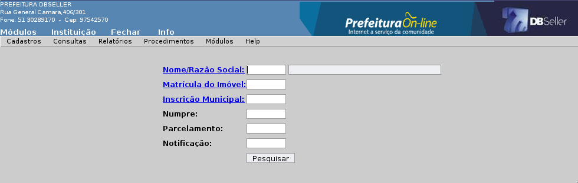
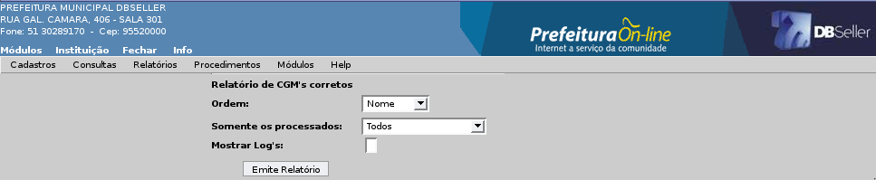
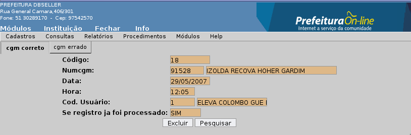

Figura 24
Índice
Documentos / Tipos de Processos 15
Tipos de Processos com Receita 16
Relatório de Andamento Padrão 17
Relatório de Processos / Departamentos 17
Relatório de Processos / CGM 19
Reimpressão da Capa de Processo 21
Reimpressão do Termo de Transferência 22
Libera CNPJ – Jurídica (menu utilizado apenas para permissão) 45
Libera CPF - Física (menu utilizado apenas para permissão) 45
MÓDULO PROTOCOLO
Neste item será cadastrado o CGM (Cadastro Geral do Município), que tem como finalidade principal gerar um cadastro único de pessoas físicas e jurídicas, possibilitando a total integração das informações em todos os módulos do sistema.
Descrição dos campos e modelo de cadastro conforme Figura 01.
Para incluir um novo CGM deve-se colocar o CPF/CNPJ da pessoa e informar se este CGM é do município ou não.
Figura
01
Após confirmar, o sistema abrirá a página de cadastros da Figura 02.
Se o CGM não pertencer ao município, o sistema abrirá uma página diferente, conforme mostra a Figura 03.
Figura
02
Figura
03
Tipo: Permite selecionar se o CGM é de Pessoa Física ou Jurídica.
CPF / CNPJ: Preencher o número do documento referente ao tipo informado. Existe um parâmetro que controla se o sistema deve permitir incluir o CGM com CPF/CNPJ zerado.
CI: Preencher o número da carteira de identidade, não é obrigatório.
CGM (Município): Deve ser selecionado se a pessoa é do município ou não.
CGM: O campo é gerado automaticamente.
Nome / Razão Social: Preencher o nome completo da pessoa física ou jurídica.
Nome do Pai: Preencher o nome completo do pai.
Nome da Mãe: Preencher o nome completo da mãe.
Data de Nascimento: Preencher a data de nascimento.
Estado Civil: Deve ser selecionado as opções: solteiro, casado, viúvo ou divorciado.
Sexo: Deve ser selecionado a opção masculino ou feminino.
Profissão: Preencher o nome da profissão, não vinculada ao CNAE.
Nacionalidade: Selecionar a nacionalidade Brasileira ou Estrangeira.
CNH: Preencher o número da Carteira Nacional de Habilitação.
Categoria: Selecionar a categoria: A, B, C, D, E, AB, AC, AD ou AE.
Emissão: Preencher a data de emissão da carteira.
Primeira: Preencher a data da primeira habilitação.
Validade: Preencher a data de validade da carteira.
Endereço Principal: Preencher os dados do endereço primário. Obrigatório.
Endereço Secundário: Preencher os dados do endereço secundário. Não Obrigatório.
Data de Cadastramento: Gera automático a data do cadastramento.
Data de Alteração: Gera automático a data de alteração.
Permite alterar todos os campos do cadastro. Obs: Não é permitido a alteração de pessoa física para jurídica.
Permite a exclusão de um CGM quando não possuir nenhuma matricula, inscrição, dívida ou processo referente a esse CGM.
Permite incluir um logradouro para utilizar no cadastro de CGM.
A alteração de logradouro poderá ser feita clicando-se no botão “alterar”.
A exclusão de logradouro poderá ser feita clicando-se no botão ”excluir”.
Permite incluir uma cidade para ser utilizado no cadastro de logradouro.
A alteração de uma localidade poderá ser feita clicando-se no sub menu “Alteração”.
A exclusão de uma localidade poderá ser feita clicando-se no sub menu “Excluir”.
Permite incluir um Estado para ser utilizado no cadastro de localidade.
A alteração de um Estado poderá ser feita clicando-se no sub menu “alteração”.
A exclusão de um Estado poderá ser feita clicando-se no sub menu “exclusão”.
Permite criar um CEP ( código de enderaçamento postal ) para um novo logradouro que por ventura não conste no cadastro de logradouro.
A alteração do CEP poderá ser possível clicando-se no sub menu “alteração”.
A exclusão do CEP poderá ser possível clicando-se no sub menu “ exclusão”.
Nesse menu são cadastrados os tipos de processos para o controle dos processos de protocolo. Não pode ser criado um processo no sistema sem um tipo de processo e o mesmo deve estar vinculado a um andamento padrão. É no tipo que são vinculados os documentos a as taxas do protocolo.
Descrição dos campos e modelo de cadastro conforme Figura 04.
Código: O campo é gerado automaticamente.
Descrição: Preencher o nome do Tipo de Processo, como por exemplo: Abertura de Rua, Abaixo Assinado.
Data Final: Preencher a data de validade para esse Tipo de Processo.
Figura
04
Permite alterar no cadastro no nome do tipo, e pode ser alterado/retirado a data limite.
Permite a exclusão do tipo, quando não estiver vinculado a nenhum processo, documento ou taxa.
Nesse menu são cadastradas todas as receitas vinculadas a um tipo de processo, com o valor da taxa a ser cobrada na criação de um novo processo, conforme mostra a Figura 05.
Tipo de Processo: Preencher o código do tipo de processo ou clicar no link para abrir a função de pesquisa.
Receita: Preencher o código da receita ou clicar no link para abrir a função de pesquisa.
Valor da Taxa: Preencher o valor da taxa cobrada por tipo de processo.
Figura
05
Permite alteração dos campos Receita e Valor da Taxa.
Permite a exclusão, quando não estiver vinculado a nenhum processo.
Nesse menu são cadastrados os documentos que serão solicitados na inclusão de um processo, vinculado ao tipo do processo.
Descrição dos campos do cadastro abaixo, conforme Figura 06.
Código: O campo é gerado automaticamente.
Descrição: Preencher o nome do documento.
Figura
06
Permite alteração dos campo Descrição.
Permite a exclusão, quando o registro não estiver vinculado a nenhum processo.
Nesse menu são cadastrados vários documentos referentes a um tipo de processo. São a relação dos documentos solicitados para abertura de um processo na prefeitura.
Descrição dos campos do cadastro abaixo, conforme Figura 07.
Tipo de Processo: Preencher o código do tipo de processo ou clicar no link “Tipo de Processo”, para abrir/acessar a função de pesquisa.
Documento: Preencher o código do documento ou clicar no link “Documento”, para abrir/acessar a função de pesquisa. Se este tipo de processo solicitar mais de um documento, basta clicar no link e selecionar o mesmo.
Figura
07
Nesse menu são cadastrados os campos das tabelas do sistema como variáveis para o tipo de processo. Ao escolher um tipo de processo na inclusão de um processo, o sistema busca os campos cadastrados nesta rotina na tela principal do processo.
Descrição dos campos do cadastro abaixo, conforme Figura 08.
Tipo de Processo: Preencher o código do tipo de processo ou clicar no link para pesquisar.
Campos: Preencher o código dos campos ou clicar no link para pesquisar. São os campos das tabelas do sistema que podem ser inseridos no processo.
Figura
08
Permite alteração dos dados nos campos.
Permite a exclusão, quando não estiver vinculado a nenhum processo.
É feita a consulta financeira dos débitos dos contribuintes. A descrição dessa consulta está no Módulo Arrecadação, conforme Figura 09.

Figura
09
Nesse menu a consulta do processo é feita pelo código do processo e o titular.
O sistema irá gerar/mostrar todos dados do processo e seus andamentos dentro da instituição, onde o usuário possui uma visão completa do andamento do processo.
Descrição dos campos do cadastro abaixo, conforme Figura 10.
Figura
10
Ao clicar no botão [consultar]. o sistema exibe a tela com a Figura 11 abaixo, podendo ser emitido um relatório da consulta para demonstração dos andamentos.
Figura
11
Nesse menu é consultado o Cadastro Geral Municipal (CGM), onde o sistema exibe uma tela de consulta, onde serão informados os dados do contribuinte a ser pesquisado.
Ele gera a ficha cadastral do contribuinte com a opção de imprimir.
Descrição dos campos do cadastro abaixo, conforme Figura 12 e 13.
Figura
12
Figura
13
Emite um relatório cadastral das variáveis do módulo protocolo, ao clicar no botão processar.
Descrição dos campos do cadastro abaixo, conforme Figura 14.
Figura
14
Na Figura 15 mostra um modelo do relatório cadastrais das Variáveis.
Figura
15
Esse relatório emite um relatório cadastral dos documentos, permitindo ordenar por ordem alfabética e numérica.
Descrição dos campos do cadastro abaixo, conforme Figura 16.
Figura 16
A Figura 17 mostra um modelo do relatório cadastrais dos documentos.
Figura
17
Esse relatório emite os cadastros dos tipos de processos do sistema, permitindo ordenar por descrição ou código.
Descrição dos campos do cadastro abaixo, conforme Figura 18.
Figura
18
A Figura 19 mostra um modelo do relatório cadastrais de tipos de processo.
Figura
19
Esse menu emite o relatório cadastral dos documentos / tipos de processo.
Descrição dos campos do cadastro abaixo, conforme Figura 20.
Tipo de processo: Preencher o código do processo ou clicar no link para pesquisar.
Opções: Permite selecionar as opções [com] ou [sem] os tipos de processo selecionados.
Ordem: podemos escolher entre duas opções: por código ou descrição do tipo de processo.
Figura
20
A Figura 21 mostra um modelo do relatório cadastral de documentos / tipos de processo.
Figura
21
Esse menu emite o relatório cadastral do tipo de processo / receita.
Descrição dos campos do cadastro abaixo, conforme Figura 22.
Figura
22
A Figura 23 mostra um modelo do relatório cadastrais de tipo de processo / receita.
Figura
23
Esse relatório gera um lista de todos os tipos de processo que possuem andamento padrão no sistema, com os dias de permanência em cada departamento para despacho.
Devemos clicar no botão [visualizar] para emitir o relatório.
Descrição dos campos do cadastro abaixo, conforme Figura 24.
Figura
24
A Figura 25 mostra um modelo do relatório de Andamento Padrão.
Figura
25
Esse relatório gera os processos por departamentos, ordenando por processo ou CGM, com os iniciados no departamento ou último andamento no departamento.
Descrição dos campos do cadastro abaixo, conforme Figura 26.
Departamentos: Preencher o código do departamento ou clicar no link para pesquisar.
Período: Preencher as datas iniciais e finais do período.
Ordem: Permite ordenar por processo ou CGM.
Seleção: Permite selecionar o processo com a opção [Iniciados no departamento] que busca apenas os processos criados no departamento ou a opção [Ultimo Andamento no Departamento], que busca apenas os processos que estão com o ultimo andamento (despacho) nesse departamento.
Figura
26
A Figura 27 mostra um modelo do relatório dos Processos / Departamento.
Figura
27
Esse relatório emite um relatório dos CGMs cujos duplos foram processados e estão corretos e os que foram identificados e não “juntados”.
Descrição dos campos do cadastro abaixo, conforme Figura 28.
Ordem: Permite ordenar por CGM ou nomes.
Processados: Permite selecionar os Todos, Sim ou Não.
Logs: Marcar para emitir os logs do sistema.

Figura
28
A Figura 29 mostra um modelo do relatório de CGM Correto.
Figura
29
Esse menu gera um relatório sintético ou analítico dos processos / CGM.
No sintético emite um resumo por CGM dos processos.
No analítico emite um resumo completo com todos campos.
Descrição dos campos do cadastro abaixo, conforme Figura 30.
CGM: Preencher o código do CGM ou clicar no link para pesquisar.
Período: Preencher as datas iniciais e finais do período de inclusão dos registros.
Tipo: Permite selecionar o relatório sintético ou analítico.
Figura
30
A Figura 31 mostra um modelo do relatório de Processo / CGM.
Esse menu emite um relatório que compara os CGMs.
O relatório faz uma comparação dos filtros identificados em todo o CGM que possue os mesmos dados informados nos campos de filtros.
Descrição dos campos do cadastro abaixo, conforme Figura 32.
Filtro do Duplos: Nome, Endereço, Número, Complemento, Bairro, Município e CPF/CNPJ.
Seleção: Permite selecionar os zerados/brancos ou não.
Figura
32
Emite as capas dos processos de um determinado intervalo, emitindo todos os processos em seqüencia independentemente dos departamentos que estão em trâmite atualmente.
Descrição dos campos do cadastro abaixo, conforme Figura 33.
Processo Inicial: Preencher o código do processo inicial do período.
Processo Final: Preencher o código do processo final do período.
Figura
33
A Figura 34 mostra um modelo da Capa do Processo.
Figura
34
Esse relatório emite um termo de recebimento na transferência de processo entre os departamentos.
Descrição dos campos do cadastro abaixo, conforme Figura 35.
Transferência: Preencher o código da Transferência ou clicar no menu pesquisa para selecionar uma transferência.
Figura
35
Na Figura 36 mostra um modelo da guia de transferência.
Figura
36
Emite um relatório geral dos andamentos e históricos dos processos. O relatório utiliza todos os filtros das guias abaixo.
Descrição dos campos do cadastro abaixo, conforme Figura 37.
ABA Processo
Período: Preencher as datas Iniciais e Finais do período.
Ordenar: Permite selecionar por: Processo, Tipo de Processo, Data/Hora, Usuário, Requerente, Departamento Inicial ou Departamento Atual.
Tipo: Permite selecionar os arquivados, andamentos ou todos.
Figura 37
ABA CGM
CGM: Preencher o código do CGM ou clicar no link para pesquisar e lançar.
Figura
38
ABA Departamento Inicial
Departamentos: Preencher o código do Departamento ou clicar no link para pesquisar.
Figura
39
ABA Tipo de Processo
Tipo de Processo: Preencher o código do Tipo de Processo ou clicar no link para pesquisar.
Figura
40
ABA Departamento Atual
Departamentos: Preencher o código do Departamento ou clicar no link para pesquisar.
Figura
41
Na Figura 42 mostra um modelo do relatório de processo.

Figura 42
Esse relatório emite uma lista dos CGMs que estão com o campo CPF/CNPJ em branco, zerado e/ou inválido o cadastro.
Descrição dos campos do cadastro abaixo, conforme Figura 43.
Considerar Brancos: Permite selecionar os em brancos ou não.
Considerar Zerados: Permite selecionar os zerados ou não.
Figura
43
Esse relatório emite etiquetas de protocolo por período de código do processo, com o código do processo e campo para por a data e assinatura. Descrição dos campos do cadastro abaixo, conforme Figura 44.
Processo Inicial: Preencher o código do processo inicial.
Processo Final: Preencher o código do processo final.
Figura
44
Na Figura 45 mostra um modelo do relatório de etiqueta.
Figura
45
Esse menu emite o relatório referente a quantos processos existem em cada departamento/instituição no sistema.
Descrição dos campos do cadastro abaixo, conforme Figura 46.
Figura
46
A Figura 47 mostra um modelo do relatório de etiqueta.
Figura
47
Gera uma relatório dos CGMs que foram incluídos ou alterados no sistema, mostrando os dados do registro atual e do anterior com os campos: Tipo da Operação, Data, Usuário, CGM, CPF / CNPJ, Nome, Endereço, Número, Complemento, Município, UF e CEP. O relatório identifica as alterações do Cadastro Geral do Município.
Descrição dos campos do cadastro abaixo, conforme Figura 48.
Períodos: Preencher as datas Iniciais e Finais do período.
Tipos: Permite selecionar as opções: todos, inclusão ou alteração.
Figura
48
A Figura 49 mostra um modelo do relatório de CGM Incluídos / Alterados.
Figura
49
Nesse procedimento deve ser informado o Nome / Razão Social dos CGMs, paa que o sistema processe e mostre todos os registros com o mesmo nome, marque um como principal e os outros como secundários.
Após gravar, em um horário agendado no servidor, o sistema irá processar e gerar um único CGM com o código do principal marcado.
Está rotina é apenas uma forma de marcação do que vai processado em uma rotina fora do sistema, pois é preciso executar o programa duplos.php, na base para fazer a união/junção. Esse agendamento fica sob responsabilidade da prefeitura, normalmente a cargo do CPD.
Descrição dos campos do cadastro abaixo, conforme Figura 50.
Figura
50
Permite a exclusão, quando não estiver vinculado a nenhum cadastro do sistema. Abrirá uma função de pesquisa (figura ), selecione o CGM a ser excluído, o sistema lançara as informações na aba CGM Correto (figura), clique em excluir. Na aba CGM Errado, o sistema mostra a relação dos CGMs marcados como errado, permitindo alteração ou exclusão, conforme mostra nas Figuras 51 e 52.

Figura
51
Figura
52
Nesse procedimento são cadastrados os processos referentes a serviços, rotinas ou informações da Prefeitura.
Para um controle geral dos processos internos da instituição, o titular do processo deve possuir um CGM cadastrado no sistema.
Ao acessar este procedimento, o sistema abrirá uma tela de pesquisa dos tipos de processos, em seguida, outra tela para selecionar o titular do processo. Após, o sistema listará todos os documentos necessários para o trâmite. Marque os documentos que serão solicitados e clique em incluir, conforme mostra a Figura 53.
O sistema emitirá o protocolo para impressão da capa do processo e retornará para a função de pesquisa do tipo de processo para inclusão de um novo processo de protocolo.
Figura
53
A Figura 54 mostra um modelo da capa do processo.
Figura 54
Permite alteração de um processo somente antes de ser registrado um tramite inicial (primeira transferência), senão só arquivando o processo conforme Figura 55.
Figura
55
Neste procedimento é feito a primeira transferência do processo no sistema. Automaticamente o sistema informa o departamento padrão do processo.
Se marcar processos de diferentes departamentos padrão, o sistema verifica um parâmetro do módulo protocolo, que indica se:
permite ou não marcar processos com departamento padrão diferente;
permite diferente mas emite uma mensagem de aviso;
permite e não avisa o usuário.
Ao selecionar, o usuário que receberá o processo, devemos verificar que somente aquele usuário poderá receber o processo, caso selecionar [nenhum], todos os usuários daquele departamento que possuam permissão poderão receber.
O sistema emite um termo de recebimento do processo para impressão conforme a Figura 56 e retorna para a página de trâmite inicial.
Figura
56
Nesse procedimento são cadastrados o pareceres dos processos.
O usuário poderá incluir um despacho se estiver no mesmo departamento e se já tiver efetuado o recebimento do processo.
O despacho pode ser público, onde este poderá ser consultado pela internet ou internamente na consulta de processos, apenas pelos usuários do sistema.
Coloque o código do processo ou pesquise no link pelo código, para acessar a função de pesquisa com todos os processos que foram recebidos pelo usuário. Após, selecione o processo e clique no botão [processar], conforme mostra na Figura 57.
Figura
57
ABA Despacho Atual
Nesta ABA é gerado uma consulta dos campos, para o usuário saber sobre o assunto e origem.
O sistema libera o campo [Despacho Interno] para o usuário dar seu parecer.
No campo [Despacho Público], permite selecionar a opção SIM ou NÃO, conforme mostra a Figura 58.

Figura
58
ABA Despacho Anterior
Mostra apenas os despachos do processo efetuados pelo departamento atual, conforme a Figura 59.
Figura
59
Para alterar basta clicar no sub menu “alteração”.
Neste procedimento é feito a transferência do processo no sistema, automaticamente o sistema informa o departamento padrão do processo, se marcar processos de diferentes departamentos padrão, o sistema verifica um parâmetro do módulo protocolo, com a mesma lógica da rotina de tramite inicial.
Ao selecionar o usuário que receberá o processo, devemos verificar que somente aquele usuário poderá receber o processo, caso selecionar [nenhum], todos os usuários daquele departamento que possuam permissão poderão receber.
O sistema emite um termo de transferência do processo para impressão, conforme a Figura 60.
Figura
60
A Figura 61 mostra um modelo da transferência.
Figura
61
Para alterar basta clicar no sub menu “alteração”.
Para Excluir basta clicar no sub menu “excluir”.
Permite excluir parte dos processos vinculados há um código de transferência, bastando marcar o processo a ser cancelado e clicar no botão [cancelar os processos], conforme mostra na Figura 62.
Figura
62
Obs: Os processos só poderão ser cancelados antes de serem recebidos ppelo departamento de destino.
Nesse procedimento o sistema mostra a relação de todos os processos que o departamento tem para receber, ou os processos referentes diretamente ao seu usuário.
Digite o código de transferência, ou basta no registro e o sistema abrirá uma tela com os dados da transferência e com a relação aos processos transferidos, conforme a Figura 63. Nesse momento, o sistema preenche o código do campo [Transferência] e após basta clicar no botão [Receber].
Figura
63
Tela da consulta dos dados da transferência dos processos.
Figura
64
Conforme mostra a Figura 65, se clicar no campo [Inf], o sistema abre outra tela com os dados do processo com opção de impressão.
Figura
65
Nesse procedimento é feito o arquivamento dos processos, assim encerrando o processo no protocolo.
O arquivamento pode ser feito individualmente ou por lote.
Descrição dos campos do cadastro abaixo, conforme Figura 66.
No arquivamento individual, você deverá informar um processo de cada vez para o arquivamento.
Processo: Preencher o código do processo ou clicar no link para pesquisar.
Data do Arquivamento: Preencher a data que foi arquivado o processo.
Histórico de Arquivamento: Preencher o histórico de arquivamento do sistema.
Figura
66
Permite alterar os campos Data e Histórico do Arquivamento.
Somente podem ser alterados processos arquivados pelo próprio usuário.
Para realizar um arquivamento em lote, informe o período da inclusão dos processos e clique em processar, conforme a Figura 01. Após, descreva o histórico do arquivamento e confirme a data, marque os processos que terão a baixa realizada e clique em [Arquivar Processos], conforme mostra a Figura 67.
O arquivamento gera o termino do processo no sistema.
Figura
67
A segunda tela do arquivamento por lote, busca apenas os processos que foram criados dentro do intervalo selecionado, conforme a Figura 68.
Figura 68
Nesse procedimento o sistema abrirá uma função com todos os processos que estão arquivados conforme Figura 69.
Para realizar o desarquivamento do processo, pesquise o processo e clique sobre o registro. Após o sistema irá pedir a confirmação do desarquivamento do processo selecionado. Confirmado, o sistema informará que o processo foi desarquivado com sucesso.
Figura
69
Nesse procedimento é efetuada a ligação de um tipo de processo a um departamento.
O sistema só permite a criação de um novo processo se o seu tipo possuir no mínomo um andamento padrão, ou seja, deverá ser informado para quais departamentos o tipo de processo deverá ser transferido. Seria como informar ao sistema o “caminho” padrão que aquele tipo de processo segue dentro da instituição.
Descrição dos campos do cadastro abaixo, conforme Figura 70.
Tipo: Preencher o tipo de processo ou clicar no link para pesquisar.
Departamento: Preencher o departamento ou clicar no link para pesquisar.
Quantidade de Dias: Preencher quantos dias por padrão que o processo normalmente permanece no departamento informado.
Ordem: Preencher a ordem de cada departamento.
Figura
70
Esse procedimento serve para emitir recibo de uma receita tributária e não tributária.
Caso seja emitido um recibo avulso e o mesmo não for pago, o contribuinte não ficará devendo, mas se houver pagamento, o sistema credita um débito. Podemos visualizar isso através da consulta pagamento efetuados, na Consulta Geral Financeira.
Quando for fazer uma arrecadação de um valor negativo, normalmente para casos de deduções, devemos utilizar a rotina de planilha, acessando Tesouraria > Procedimento > Planilha de Lançamento.
Ao lançar um recibo vinculado ao processo de protocolo, o sistema lança o valor ao CGM do titular do processo, ficando vinculado ao processo. Descrição dos campos do cadastro conforme a Figura 71.
Receita: Preencher o código da receita ou clicar no link para pesquisar.
Taxa: Preencher o valor da taxa ou clicar no link para pesquisar as taxas referente a receita escolhida.
Histórico: Preencher uma descrição referente ao recibo.
Data Vencimento: Preencher a data de vencimento do recibo de pagamento.
Figura 71
Para cancelar o recibo gerado, selecione o recibo e clique no botão excluir, conforme mostra a Figura 72.
Figura
72
Nesse procedimento o trâmite interno permite ao usuário despachar, transferir e receber processos de outro usuário dentro do mesmo departamento, gerando todas informações necessárias para tramitar o processo internamente.
Esse processo gera um registro de despacho interno no departamento, quando for necessário o parecer de mais de uma pessoa do departamento.
Descrição dos campos do cadastro abaixo.
ABA Despacho Atual
Nesta ABA é gerado uma consulta dos campos, para o usuário saber sobre o assunto e origem.
Libera o campo [Despacho Interno] para o usuário digitar seu parecer.
No campo [Despacho Público], permite selecionar a opção SIM ou NÃO, conforme mostra a Figura 73.
Figura
73
ABA Despacho Anterior
Mostra apenas os despachos do processo efetuados pelo departamento atual.
Na transferência de processos entre os usuários do mesmo departamento, digite o parecer para transferência do processo no campo [Despacho Interno], selecione o usuário que receberá o processo internamente, marque SIM ou NÃO no campo [Despacho Público], marque os processos a serem transferidos e clique em transferir, conforme mostra a Figura 74.
Figura
74
Ao selecionar o código da transferência interna a ser cancelada, o sistema irá mostrar todos os dados da transferência. Marque o processo e clique no botão [Cancelar o Processo], conforme mostra a Figura 75.
Figura
75
Marque os processos referente ao usuário e clique no botão [Receber], conforme a Figura 76.
No registro da transferência, o usuário pode clicar no campo [Ver], para acessar uma função com mais informações do processo.
Figura
76
Permissão liberada para o usuário incluir um CGM com CNPJ zerado no cadastro geral do município.
Permissão liberada para o usuário incluir um CGM com CPF zerado no cadastro geral do município.
São informados os parâmetros para a configuração dos processos do Módulo Protocolo.
Descrição dos campos do cadastro abaixo, conforme Figura 77.
Emite Recibo: Selecionar se o sistema emite recibo na inclusão do processo.
Atualizar CGM (Inclusão de Processo): Selecionar se o usuário deve atualizar os dados do CGM na hora da inclusão do processo.
Valida CPF / CNPJ: Selecionar se o programa deve validar o CPF/CNPJ do CGM durante a inclusão dos processos de protocolo.
Emite usuário na capa: Selecionar se quer emitir/imprimir o nome do usuário que criou o processo na capa do processo.
Verifica se o CGM possui débitos: Em algumas rotinas como: solicitação de compras e autorização de empenho, verificar se o CGM do titular possui débitos.
Despacho obrigatório: Selecionar se o despacho no processo será obrigatório.
Caracteres mínimos no Despacho: Preencher o número mínimo de caracteres para o despacho.
Trâmites / Transferência: são 3 (três opções) em relação a escolher os departamentos nas rotinas de tramite inicial e transferência de processos nos casos de haver mais de um processo envolvido:
permitir escolher departamentos diferentes;
não permitir escolher departamentos diferentes;
permitir escolher departamentos diferentes, mas avisar o usuário.
Mostra Andamento Atual: Selecionar se deseja visualizar o andamento atual do processo na consulta dos processos.
Modelo Capa: Permite selecionar as opções: Modelo Padrão, Modelo 1 e Modelo 2.
Emite Variáveis: Selecionar se o sistema vai emitir as variáveis na capa do processo.
Texto padrão na certidão: Descrever um texto padrão na emissão da Certidão de Débitos.
Figura
77
|
DBSeller Serviços de Informática Ltda. – www.dbseller.com.br Rua General Câmara, 406/301 – Porto Alegre/RS – Fone: (51) 3076-5101 |
|